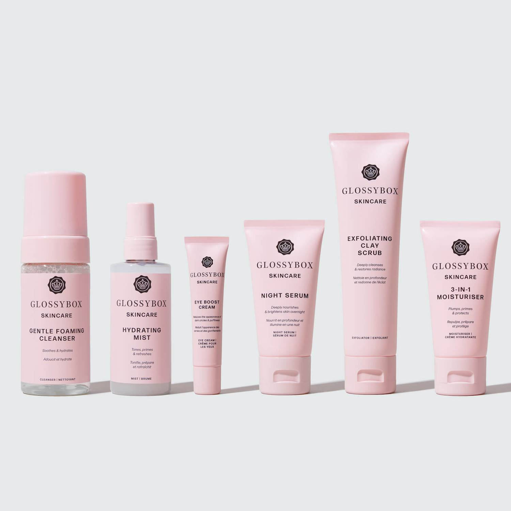

Every teen should finish their skin-care routine by applying sunscreen, regardless of their skin type.
The Skincare Hoax author and dermatologist Dr. Fayne Frey from New York claims that sunscreen guards against skin cancer and sun damage.
And it is best to start using sunscreen as soon as possible. Imagine it as something similar to how teens prepare for the day each morning by brushing their teeth. Dr. Angela Casey, a board-certified dermatologist, concurs and claims it will benefit teenagers with inflammatory skin conditions like redness and reactive skin.
FOR TEENS WITH ACNE
According to dermatologist Dr. Anjali Mahto, 85 percent of teenagers experience acne of some severity. The hormonal changes of puberty frequently cause breakout.
FOR TEENS WITH DRY SKIN
According to Casey, dry skin is deficient in oils and needs to be replenished. Our skin becomes fragile and brittle without this replenishment, similar to a dried-out leaf or flower petal. It splits (often on a microscopic scale), becoming extremely irritable and sensitive. Our experts advise using products high in humectants and emollients, substances that restore the skin barrier, to treat dry skin.
FOR TEENS WITH OILY SKIN
Many teenagers feel as though they need to cleanse their faces excessively because of the oily T-zones they have around their nose and forehead. But this is actually illogical. Saedi advises against overwashing, especially if you have oily skin. When you do, you rob your skin of its natural oils, which it makes up for by overproducing, and you soon find yourself in a never-ending cycle (or spiral). For similar reason, teens with oily skin may believe they don't need to moisturize. Because they think it will make their skin more oily or result in breakouts, many acne patients are afraid to moisturize. Simply put, this is untrue, claims Lolis.
FOR TEENS WITH SENSITIVE SKIN

It's best to stay away from products with long ingredient lists and to avoid fragrance
or parfum if your teen has sensitive skin or a condition like eczema or rosacea. It's important to use hydrating, gentle ingredients to avoid disrupting the skin barrier. By virtue of having a compromised skin barrier where skin breaks, sensitive skin can also be dry, so you can also take a look at those suggestions
FOR ACTIVE TEENS
Any of the moisturizers our experts have suggested will work depending on the skin type of your child, so you don't need to worry about buying one specifically for a sporty teen. However, for teenagers who participate in a lot of sports, "it is important to cleanse the skin on the face, chest, and back immediately after sweating excessively," advises Dr. Kim Nichols, a board-certified dermatologist and the owner of NicholsMD in Greenwich, Connecticut. The removal of dirt, oils, and bacteria from the skin through sweat is very effective at cleaning the pores, but if it is left on the skin for too long, it can lead to breakouts. Collins adds that washing your face alone is insufficient. Helmets, hats,
and sporting equipment must all be washed as well.